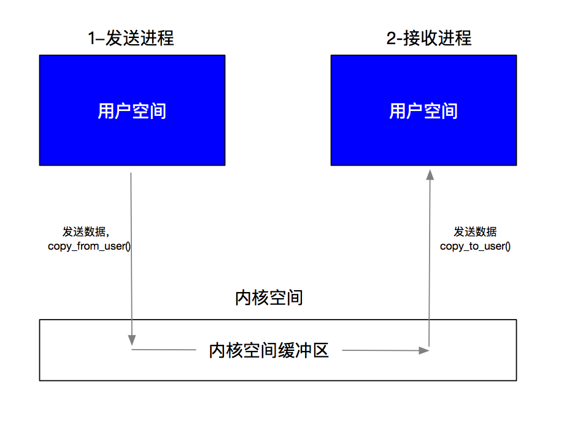
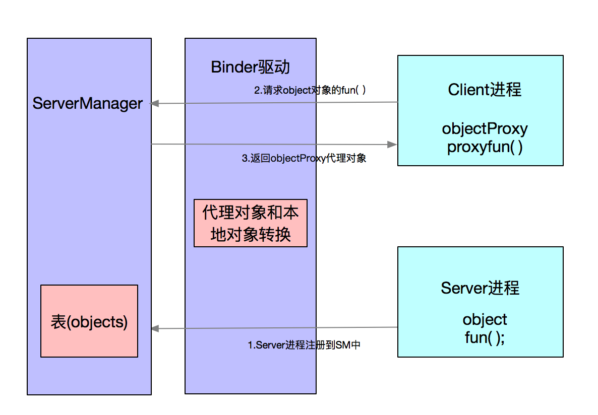
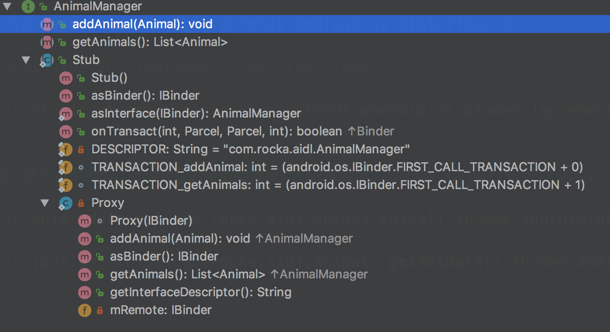

Android 粘合剂'Binder'
背景知识
要详细掌握Android 的Binder通信机制需要先提前了解一些通信原理与Linux系统的基础知识。
RPC
RPC(Remote Procedure Call)，即远程过程调用，也被称为远程方法调用。
RPC是一种计算机通信的协议，定义就是一台电脑的Client端调用另一台电脑的Server程序，由Client对Server发起若干请求，Server根据收到Client的信息进行操作。RPC是一种典型的Client/Server模式。
AIDL
RPC只是一种计算机通信协议，IDL规定了通信的规则。
IDL(Interface Define Language)，即接口定义语言，它通过一种中立的方式来描述接口，使得在不同平台上运行的对象和用不同语言编写的程序可以相互通信交流。
用户空间/内核空间/系统调用
进程空间分为 用户空间 和 内核空间（Kernel）。Android是基于Linux的，Linux Kernel是操作系统的核心，操作系统核心肯定不能让应用程序随意访问，只能访问系统让你访问的资源，不能访问的资源拒绝被访问，所以就被划分为进程空间和内核空间。用户空间访问内核空间这一操作，被称为系统调用。所有的这些访问都是在内核空间的控制下，以保证不出现越权访问，从而保证系统的安全和稳定性。
二者的区别:
- 进程间，用户空间的数据不可以共享，用户空间是一个不共享空间
- 进程间，内核空间的数据是可以共享，内核空间是一个可共享空间
可加载内核模块/Binder驱动
用户空间访问内核空间为系统调用，如果用户空间访问用户空间，其实就是用户层上的跨进程通信了。传统Linux的支持方式有管道，Socket等都是内核支持的。那么用户空间是怎么访问用户空间的呢？通过 “安装驱动” 的方式。
- Linux的动态可加载内核模块（Loadable Kernel Module，LKM）就是前面提到的这个驱动，模块是具有独立功能的程序，可以单独编译，不能单独运行。它在运行时被链接到内核作为内核的一部分在内核空间里运行。这样，Android系统可以通过添加一个动态可加载内核模块运行在内核空间，用户进程之间的通过这个模块作为桥梁，就可以完成通信了，当然这个动态可加载内核模块就是Binder驱动。
IPC与进程隔离
IPC 即 Inter-Process Communication (进程间通信)。
进程隔离
为了保证安全性和独立性，用户空间一个进程不能直接操作或者访问另一个进程，即Android的进程是相互独立、隔离的
传统进程间通信的方式 :

缺点与不足 ：
- 效率不高，数据是从 用户空间 -> 内核空间 -> 用户空间， 做了两次数据拷贝，浪费时间
- 接收数据的缓存不知道具体的大小，接收方不知道要多大缓存才满足需求
Binder通信流程
Binder的通信用一个通俗的打电话事件进行类比：
小李打电话给小王，小李必须知道小王的电话号码，所以需要一个通讯录来告知小李，小王的电话号码，这个通讯录就是一张表，记录着小王名字和电话。知道了电话，当然需要拨通电话，通过基站来传递信息
Binder跨进程通信机制基于Client - Server
Binder模型角色
| 角色 | 说明 | 类比 |
|---|---|---|
| Client进程 | 使用服务的进程 | 小李 |
| Server进程 | 提供服务的进程 | 小王 |
| ServerManage | 管理Server的注册与查询 | 通讯录 |
| Binder驱动 | 虚拟设备驱动，是连接彼此的桥梁 | 基站 |
Binder通信流程

- Server进程在ServerManager中注册，注册自己需要被Client进程通信的对象object以及方法fun();
- Client进程向ServerManager查询对应的对象object以及方法fun()，但是Binder驱动返回的是一个”傀儡“代理对象objectProxy以及该方法，但是没有Server进程里的那个能力。
- Client进程拿到Binder驱动返回的代理对象，由于Client进程识别不出真假，直接调用代理对象objectProxy的方法。
- Binder驱动收到调用代理对象方法的消息后，一查表发现是个代理对象，之前又用代理对象objectProxy替换发送给Client进程。它真正想访问的是object对象的fun();于是Binder驱动通知Server进程，调用你的object对象的fun()，然后把结果发给我，Sever进程收到这个消息，照做之后将结果返回驱动，驱动然后把结果返回给Client进程；于是整个过程就完成了。
总结
- Binder的核心机制是代理机制，核心的原理是内存映射
- 对于Binder的访问，如果是在同一个进程（不需要跨进程），那么直接返回原始的Binder实体；如果在不同进程，那么就给他一个代理对象
- Client进程只不过是持有了Server端的代理；代理对象协助驱动完成了跨进程通信。
内存映射
- 本文不过多赘述，就是只比普通进程通讯少拷贝了一次数据。Linux的内存映射
驱动里的Binder
- Server进程里面的Binder对象指的是Binder本地对象，Client里面的Binder对象值得是Binder代理对象，在跨进程通信的时候，Binder驱动会自动转换这两种数据类型。因此，Binder本地对象的保存在一个叫做binder_node的数据结构，Binder代理对象是保存在一个叫做binder_ref的数据结构中。
源码理解Java层Binder
简单定义AIDL接口，AIDL通过编译项目会生成AIDL接口通信类。生成的接口继承IInterface，IInterface是进程间通信的通用接口，同时曝光了两个供外部调用的方法，生成的代码都添加了个人理解的注释。

/*
* This file is auto-generated. DO NOT MODIFY.
* Original file: /Users/Rocka/Desktop/rocka_workspace/DEMO_AIDL/server/src/main/aidl/com/rocka/aidl/AnimalManager.aidl
*/
package com.rocka.aidl;
public interface AnimalManager extends android.os.IInterface {
/**
* Local-side IPC implementation stub class.
*/
public static abstract class Stub extends android.os.Binder implements com.rocka.aidl.AnimalManager {
//唯一标识，类的具体路径名，用于唯一表示这个 IInterface
private static final java.lang.String DESCRIPTOR = "com.rocka.aidl.AnimalManager";
/**
* Construct the stub at attach it to the interface.
* 将当前接口与Binder绑定
*/
public Stub() {
this.attachInterface(this, DESCRIPTOR);
}
/**
* Cast an IBinder object into an com.rocka.aidl.AnimalManager interface,
* generating a proxy if needed.
* 将一个IBinder 的对象转换成AnimalManger接口，如果不在一个进程创建一个代理
*/
public static com.rocka.aidl.AnimalManager asInterface(android.os.IBinder obj) {
if ((obj == null)) {
return null;
}
//通过唯一标识从本地去查询
android.os.IInterface iin = obj.queryLocalInterface(DESCRIPTOR);
if (((iin != null) && (iin instanceof com.rocka.aidl.AnimalManager))) {
return ((com.rocka.aidl.AnimalManager) iin);
}
//查不到就返回代理
return new com.rocka.aidl.AnimalManager.Stub.Proxy(obj);
}
@Override
public android.os.IBinder asBinder() {
return this;
}
//关键的方法，执行自定义接口里面的方法
@Override
public boolean onTransact(int code, android.os.Parcel data, android.os.Parcel reply, int flags) throws android.os.RemoteException {
switch (code) {
case INTERFACE_TRANSACTION: {
reply.writeString(DESCRIPTOR);
return true;
}
case TRANSACTION_addAnimal: {
data.enforceInterface(DESCRIPTOR);
com.rocka.aidl.Animal _arg0;
if ((0 != data.readInt())) {
_arg0 = com.rocka.aidl.Animal.CREATOR.createFromParcel(data);
} else {
_arg0 = null;
}
this.addAnimal(_arg0);
reply.writeNoException();
return true;
}
case TRANSACTION_getAnimals: {
data.enforceInterface(DESCRIPTOR);
java.util.List<com.rocka.aidl.Animal> _result = this.getAnimals();
reply.writeNoException();
reply.writeTypedList(_result);
return true;
}
}
return super.onTransact(code, data, reply, flags);
}
private static class Proxy implements com.rocka.aidl.AnimalManager {
private android.os.IBinder mRemote;
Proxy(android.os.IBinder remote) {
mRemote = remote;
}
@Override
public android.os.IBinder asBinder() {
return mRemote;
}
public java.lang.String getInterfaceDescriptor() {
return DESCRIPTOR;
}
/**
* 除了基本数据类型，其他类型的参数都需要标记方向类型，in(输入)，out(输出)，inout(输入输出)
*/
@Override
public void addAnimal(com.rocka.aidl.Animal animal) throws android.os.RemoteException {
android.os.Parcel _data = android.os.Parcel.obtain();
android.os.Parcel _reply = android.os.Parcel.obtain();
try {
_data.writeInterfaceToken(DESCRIPTOR);
if ((animal != null)) {
_data.writeInt(1);
animal.writeToParcel(_data, 0);
} else {
_data.writeInt(0);
}
mRemote.transact(Stub.TRANSACTION_addAnimal, _data, _reply, 0);
_reply.readException();
} finally {
_reply.recycle();
_data.recycle();
}
}
@Override
public java.util.List<com.rocka.aidl.Animal> getAnimals() throws android.os.RemoteException {
android.os.Parcel _data = android.os.Parcel.obtain();
android.os.Parcel _reply = android.os.Parcel.obtain();
java.util.List<com.rocka.aidl.Animal> _result;
try {
_data.writeInterfaceToken(DESCRIPTOR);
mRemote.transact(Stub.TRANSACTION_getAnimals, _data, _reply, 0);
_reply.readException();
_result = _reply.createTypedArrayList(com.rocka.aidl.Animal.CREATOR);
} finally {
_reply.recycle();
_data.recycle();
}
return _result;
}
}
static final int TRANSACTION_addAnimal = (android.os.IBinder.FIRST_CALL_TRANSACTION + 0);
static final int TRANSACTION_getAnimals = (android.os.IBinder.FIRST_CALL_TRANSACTION + 1);
}
/**
* 除了基本数据类型，其他类型的参数都需要标记方向类型，in(输入)，out(输出)，inout(输入输出)
*/
public void addAnimal(com.rocka.aidl.Animal animal) throws android.os.RemoteException;
public java.util.List<com.rocka.aidl.Animal> getAnimals() throws android.os.RemoteException;
}
源码分析：
Stub 的asInterface(android.os.IBinder obj)函数的参数IBinder类型的obj，这个对象是驱动给我们的。通过唯一标识从本地去查询，它会试着查找Binder本地对象，如果找到，说明Client和Server都在同一个进程，这个参数直接就是Binder本地对象，直接强制类型转换然后返回，如果找不到，说明是BinderProxy远程对象（处于另外一个进程）那么就需要创建一个Binde代理对象，让这个Binder代理实现对于远程对象的访问。一般来说，如果是与一个远程Service对象进行通信，那么这里返回的一定是一个Binder代理对象，这个IBinder参数的实际上是BinderProxy;
Proxy是抽象类Stub的一个类部类，它代表的是远程进程的Binder本地代理。Proxy和Stub都继承自IBinder，所以都具有跨进程传输的能力，在通信的时候，会自动完成这两个数据类型的转换。
抽象类Stub的类部类实现了上文的两个抽象方法addAnimal()和getAnimals()。抽象方法先用Parcel把数据序列化了，然后iBinder调用transact()方法。transact最后通过JNI调用到talkWithDriver函数；通信过程交给驱动完成；这个函数最后通过ioctl系统调用，Client进程陷入内核态，Client调用addAnimal方法的线程挂起等待返回；驱动完成一系列的操作之后唤醒Server进程，调用了Server进程本地对象的onTransact函数（实际上由Server端线程池完成）。
我们再看Binder本地对象的onTransact方法（这里就是Stub类里面的此方法)。调用了Binder本地对象的addAnimal方法；这个方法将结果返回给Binder驱动，驱动唤醒挂起的Client进程里面的线程并将结果返回。于是一次跨进程调用就完成了。
Proxy与Stub的区别。虽然他们都既是Binder又是IInterface，不同的是Stub采用的是继承（is 关系），Proxy采用的是组合（has 关系）。他们均实现了所有的IInterface函数，不同的是，Stub又使用策略模式调用的是虚函数（待子类实现），而Proxy则使用组合模式。
Binder就总结到这里吧，其实还有很多可以继续深入学习的。